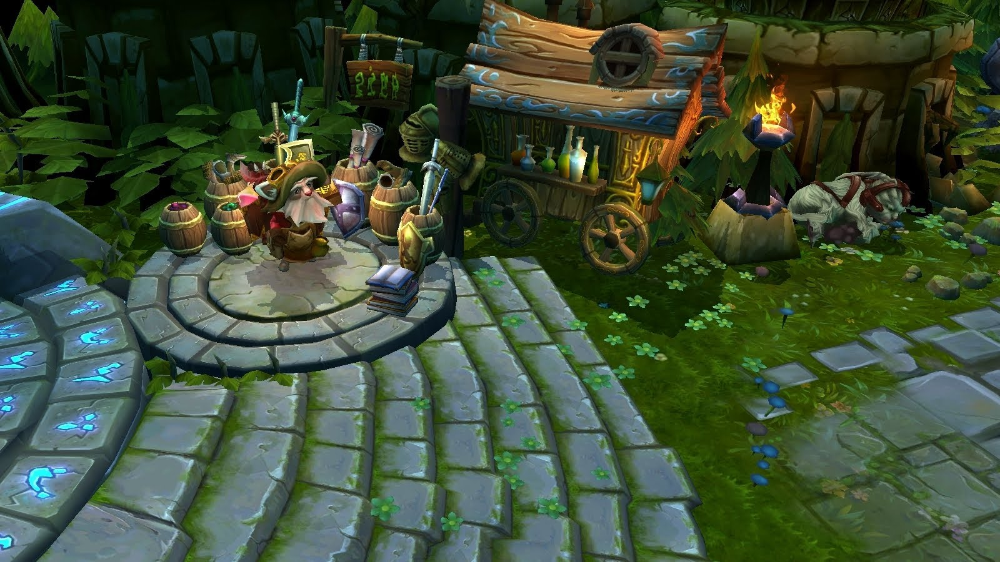

Every champion has its own builds, it really depents on if you are an ability power champion, an attack damage champion, or a tank.
Every champion starts with boots, potions or a starting item which increases your damage.
An ability power build for Karthus (APCary):
-

Starting items.
Mana Potion:
Restores 100 mana over 15 seconds.
Health Potion:
Restores 100 Health over 15 seconds.
Sapphire Crystal:
+ 200 mana.
Warding Totem:
Places a Stealth ward for 60 seconds. -
Example Finished build.
Righteous Glory:
+ 500 health, + 300 mana, + 60% movement speed when moving towards an enemy.
Sorcerer's Shoes - Alacrity:
+ 15 magic penetration, + 15 movement speed. Alacrity +20 movement speed.
Archangel's Staff:
+ 80 ability power, + 250 mana. Gain ability power equal to 3% of your maximum mana.
Randuin's Omen:
+ 60 armor, + 400 health. If you are hit by a basic attack, you slow your attacker.
Thornmail:
+ 100 armor. When being hit by basic attacks, return 15% of the damage taken.
Abyssal Scepter:
+ 70 ability power, + 50 magic resistance.
An Attack damage build for Ezreal (ADCarry):
-
Starting items.
Doran's Blade:
+ 7 attack damage, + 70 health, + 3 life steal.
Health Potion:
Restores 100 Health over 15 seconds.
Warding Totem:
Places a Stealth ward for 60 seconds. -
Example finished Build.
Trinity Force:
+ 30 AP, + 30 AD, + 30 AS, +250 health, + 200 mana.
Muramana:
+ 20 attack damage, + 1000 mana.
Ionian Boots Of Lucidity - Alacrity:
+ 45 movement speed, + 15 cooldown reduction. Alacrity + 10 movement speed.
Last Whisper:
+ 40 attack damage, physical damage ignores 35% of targets armor.
The Bloodthirster:
+ 80 attack damage, absorbs 50 - 350 damage.
Mercurial Scimitar:
+ 80 attack damage, + 35 magic resistance.
A Support build for Nami (Support):
-
Starting items.
Spellthief's Edge:
+ 5 ability power, + 2 gold generation. Spells and basic attacks against enemies deal 10 additional damage and grant 5 gold.
Health Potion:
Restores 100 Health over 15 seconds.
Mana Potion:
Restores 100 mana over 15 seconds.
Warding Totem:
Places a Stealth ward for 60 seconds. -
Example Finished Build.
Boots Of Mobility - Homeguard:
+ 25 movement speed. Homeguard + extra fast regen of health and mana.
Locket Of The Iron Solari:
+ 10 cooldown reduction, + 400 health, + 20 magic resistance.
Frozen Heart:
+ 90 armor, + 20 cooldown reduction, + 400 mana.
Oracle's Lens:
Disables and reveals nearby hidden wards and traps for 6 seconds.
Zeke's Harbringer:
+ 50 ability power, + 30 armor, + 10 cooldown reduction, + 250 mana.
Mikeal's Crucible:
+ 10 cooldown reduction, + 40 magic restistance. + 100% base mana regeneration.
A Jungler build for Amumu (Jungle):
-
Starting items.
Hunter's Machete:
Deal 30 magic damage on hit to monsters over 2 seconds and gain 7 health and 4 mana per second.
Health Potion:
Restores 100 Health over 15 seconds.
Sweeping Lens:
Disables and reveals nearby hidden wards and traps for 4 seconds. -
Example Finished Build.
Boots Of Mobility - Homeguard:
+ 25 movement speed. Homeguard + extra fast regen of health and mana.
Stalker's Blade - Cinderhulk:
+ 400 health, + 15 health multiplier. Deal 45 magic damage to monsters.
Dead Man's Plate:
+ 50 armor, + 600 health. You build up stacks, increasing movement speed.
Liandry's Torment:
+ 80 ability power, + 300 health. + 15 magic penetration.
Spirit Visage:
+ 10 cooldown Reduction, + 400 health, + 60 magic restistance. + 150 base health regeneration.
Frozen Heart:
+ 90 armor, + 20 cooldown reduction. Reduces the attack speed of nearby enemies.
A Tank build for Rengar (Tank):
-
Starting items.
Doran's Shield:
+ 80 health, + 6 health regen every 5 seconds. Blocks 8 damage from enemy basic attacks.
Health Potion:
Restores 100 health over 15 seconds.
Warding Totem:
Places a Stealth ward for 60 seconds. -
Example Finished Build.
Mercury's Treads:
+ 25 magic penetration, + 45 movement speed.
Sunfire Cape:
+ 450 health, + 45 armor. Deals 25 character level damage per second.
Spirit Visage:
+ 10 cooldown Reduction, + 400 health, + 60 magic restistance.
Randuin's Omen:
+ 60 armor, + 400 health. If you are hit by a basic attack, you slow your attacker.
Ravenous Hydra:
+ 75 attack damage, + 15 health regeneration per 5 seconds, + 12% life steal.
Bonetooth Necklace:
Rengar collects trophies when killing champions and gains bonus effects based on how many trophies he has.